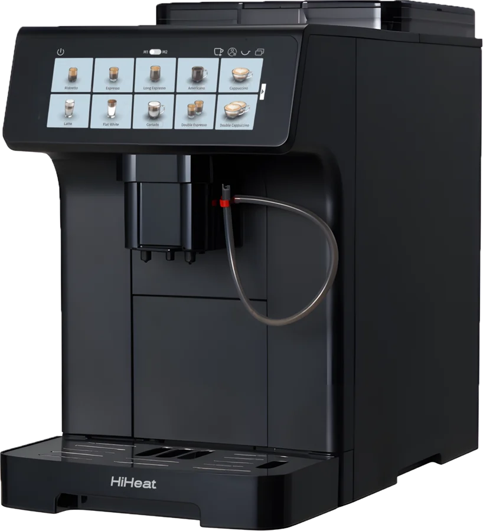

- Video 1Cafetera vieja vs. cafetera nueva
- Video 2«Lo que estoy planeando» (expectativa)
- FotosTú y la H9 en tu casa
- Video 3La tarde entre amigas: pizzas en vivo, cócteles y café
- FotosPara el carrusel de la tarde
- InvitadoChef Luis, de Q. Masa, con el horno de pizza HiHeat
Un día solo contigo, en tu depa
Es la producción corta. Grabamos con tomas fijas (la cámara no se mueve), así que es rápido: unos 40 minutos para el video principal, 10 para el de expectativa y 15 para las fotos.
Pantalla dividida: tú con la cafetera vieja vs. tú con la H9
Es un video en pantalla dividida: dos Jovis en la misma cocina, al mismo tiempo. A la izquierda, tú apurada peleando con una cafetera vieja: se demora, se riega, el café sale feo. A la derecha, tú tranquila y contenta con tu H9: un toque y listo. Grabamos cada lado por separado con la cámara quieta en el mismo lugar, y en la edición los juntamos.
Entras a la cocina · plano general
Preparas el café · detalle de las manos
Esperas · plano de tu cara
La taza · detalle de cerca
El final · las dos Jovis se encuentran
- Tú solo tienes que tener lista tu cafetera de todos los días, con agua y granos
- Y dos cambios de ropa: pijama (lado izquierdo) y lista para salir (lado derecho)
Nosotros llevamos la cafetera vieja, el café molido, las tazas y todo lo de las escenas de humor.
- Marca con cinta en el piso dónde va el trípode en cada toma
- Graba primero todo el lado izquierdo (caos) y después todo el derecho (calma), sin mover la cámara
- Cada lado ocupa su mitad del cuadro: no cruces al otro lado, salvo en el pase de la taza
- Deja correr 3 segundos antes y después de cada acción
- Exagera un poquito el caos: el humor es lo que hace que se comparta
«Estoy planeando algo con mis amigas…»
Este video abre la historia del día 2. Lo grabamos el miércoles, al final del día 1, y lo publicas esa noche en historias y como reel al día siguiente. La idea: contar que este año no quieres la típica cena navideña donde todas terminan sentadas conversando, sino una tarde distinta. No contamos qué es: solo dejamos pistas.
Tú a cámara, con un café en la mano.
Detalle: escribes en el chat de tus amigas, o tachas una lista en un papel.
Pistas rápidas (1 segundo cada una): una tabla de madera, harina en la mano, un vaso de cóctel, una taza de café.
Si el día 2 queda para el viernes, cambia «el jueves» por «el viernes».
Tú y la H9 en tu casa, con luz de ventana

Las fotos son para historias y carruseles. Que se vean como tu casa real, no como un catálogo: luz natural, mesón limpio y la H9 con el logo de frente.
La tarde entre amigas
Rompemos lo típico. En vez de la cena de siempre, una tarde para hacer cosas juntas: pizzas en vivo con el chef Luis, de Q. Masa, y el horno de pizza HiHeat, unos cócteles y, para cerrar el plan, un buen café de la H9. Todo contado por ti, como idea tuya, natural y sin sonar a anuncio.
- Tú, la anfitriona
- 2 o 3 amigas, que llegan sin saber la sorpresa
- Chef Luis, de Q. Masa, chef pizzero invitado
- Nuestro equipo de grabación
- Horno de pizza HiHeat (lo trae Luis)
- Cafetera H9
- Máquina de hielo iGlace, para los cócteles
- Ingredientes de pizza, cocteleras, vasos y tazas
El chef Luis, de Q. Masa, y su horno
Luis es chef pizzero. Este post muestra quién es, el horno de pizza HiHeat que va a usar y cómo quedan las pizzas que van a armar juntas.
La tarde en 5 momentos
Llegan tus amigas. Las recibes en la puerta; ellas todavía no saben qué va a pasar.
La sorpresa: aparece el chef Luis, de Q. Masa, con el horno de pizza HiHeat. Queremos sus caras.
- Plano de las amigas reaccionando
- El horno encendido, con el fuego
- Luis presentándose en una frase
Pizzas en vivo. Cada una arma su propia pizza y Luis la mete al horno. Es el corazón del video.
- Manos estirando la masa y poniendo ingredientes
- La pizza entrando al horno
- La pizza saliendo, burbujeante (repite esta toma varias veces)
- El primer mordisco, con el queso estirándose
Los cócteles. Hielo de la máquina iGlace, coctelera y un brindis entre todas.
- Hielo cayendo en el vaso (en cámara lenta, si se puede)
- El brindis, de cerca
Café para cerrar el plan. La H9 prepara un café para cada una, ya de sobremesa.
- Tu dedo tocando la pantalla de la H9
- El café cayendo en la taza
- Todas en la mesa, conversando con su café
Tres preguntas cortas, frente a cámara
Una por una, con el café en la mano. Respuestas de 5 a 10 segundos, con sus palabras (no les damos un texto).
- A tus amigas: «¿Qué fue lo mejor de la tarde?»
- A tus amigas: «¿Lo repetirías en tu casa estas fiestas?»
- A Luis: «¿Qué tal te fue con el horno?»
- Y tú, para cerrar: «¿Ya saben con quién van a armar la suya?»
La tarde contada en 7 fotos
Con la luz y el ambiente de la tarde, no como foto de producto.
Reglas de oro
Qué publicamos y cuándo
| Pieza | Cuándo | Dónde |
|---|---|---|
| Expectativa | Miércoles 25 en la noche (historias) y día 2 en la mañana (reel) | Tu perfil, en colaboración con @hiheat_ec |
| Vieja vs. nueva | Fin de semana del 28 y 29 de noviembre | Colaboración tuya con @hiheat_ec |
| La tarde entre amigas | Primera semana de diciembre | Colaboración tuya con @hiheat_ec y la cuenta de iGlace |
| Carrusel de fotos | Dos o tres días después del reel de la tarde | @hiheat_ec, contigo en colaboración |
Las fechas de publicación son sugeridas; las cerramos juntos cuando el material esté editado. Nosotros nos encargamos de la edición, los textos y la música.